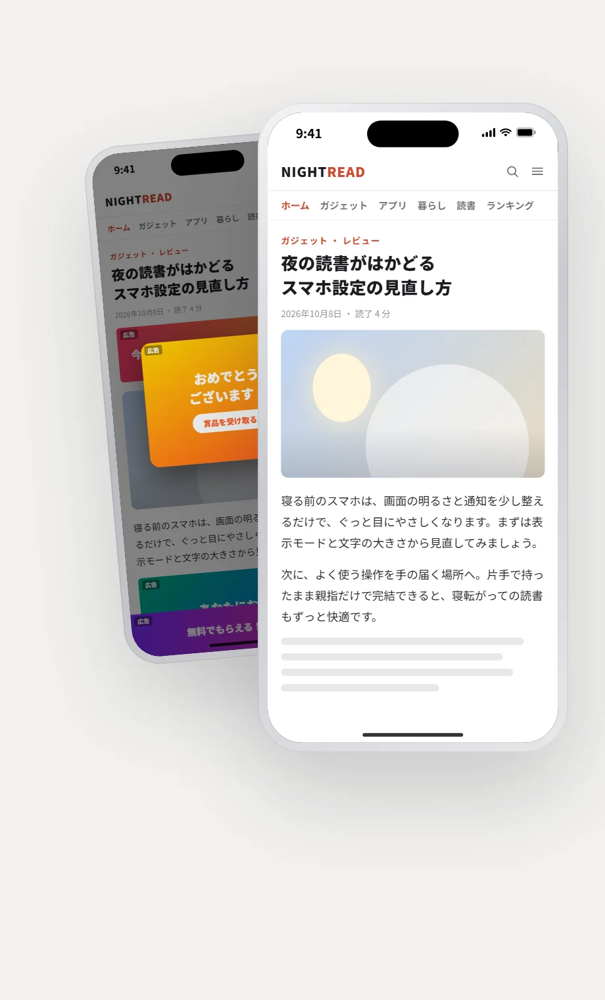

01 — Ad Block
読みたいのは
広告じゃないRead the page.
Not the ads.
広告の配信先を通信の段階で止め、ページに残った広告枠は見えないように隠します。広告ブロックの利用を検知してページを壊すサイトにも対策しています。HalfMoon stops ad networks before they load and hides any ad slots left on the page. It also handles sites that try to detect ad blockers and break the page.
- 広告・ポップアップ・画面に追従するバナーを自動でブロックAds, pop-ups and sticky banners are blocked automatically
- 判定は端末の中だけで行い、閲覧の記録を送信しませんEverything runs on your device. No browsing records are sent anywhere
- 応援したいサイトは、サイトごとにオフにできますTurn blocking off per site for the creators you want to support